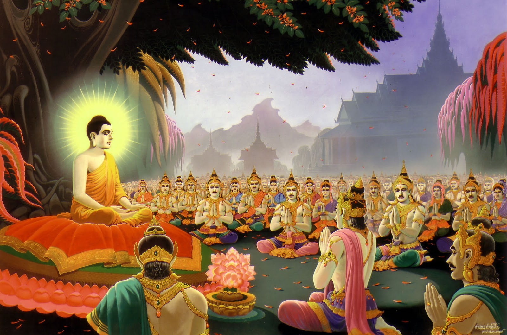

ความหมายและความสำคัญ
วันธรรมสวนะ หรือที่เรียกกันทั่วไปว่า **"วันพระ"** คือวันกำหนดประชุมฟังธรรมและรักษาศีลของพุทธศาสนิกชน ซึ่งมีมาตั้งแต่สมัยพุทธกาล โดยกำหนดตามปรากฏการณ์ข้างขึ้นข้างแรมของดวงจันทร์ เดือนละ 4 ครั้ง ได้แก่ วันขึ้น ๘ ค่ำ, วันขึ้น ๑๕ ค่ำ (วันเพ็ญ), วันแรม ๘ ค่ำ และวันแรม ๑๔ หรือ ๑๕ ค่ำ
วันพระเป็นโอกาสที่ชาวพุทธจะละเว้นจากการทำบาปและหันมาสร้างบุญกุศลเป็นพิเศษ เป็นการเตือนสติให้ไม่ประมาทในการใช้ชีวิต และเป็นวันแห่งการขัดเกลาจิตใจให้สะอาดบริสุทธิ์ยิ่งขึ้น